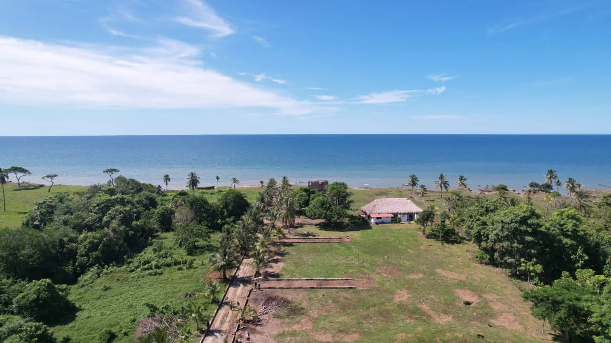
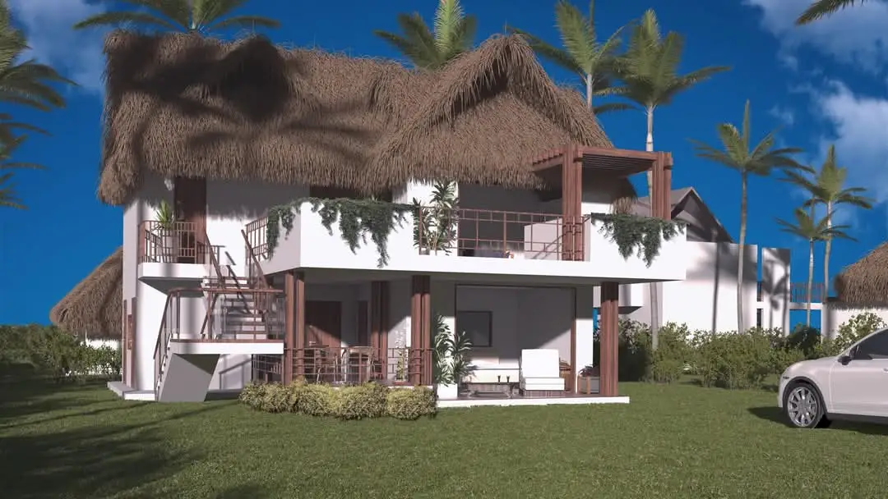

Tokenization Infrastructure
Digital infrastructure designed to support compliant issuance, administration and management of tokenized real-world assets.
Learn moreRWAXI Digital Infrastructure In Development
RWAXI develops the infrastructure to structure, tokenize and connect real-world assets with global capital markets.
Institutional infrastructure for a more connected private market.
01 / What we do
RWAXI integrates legal, financial and technological infrastructure to help transform real-world assets into structured digital investment opportunities.
Digital infrastructure designed to support compliant issuance, administration and management of tokenized real-world assets.
Learn moreInvestment vehicles, SPVs and financial structures designed around real-world assets.
Learn moreInfrastructure designed to support compliant digital investment instruments, investor rights and programmable administration.
Learn moreConnecting quality physical assets with modern investment and digital capital market infrastructure.
Learn more02 / Our approach
Rights, ownership and investment structures are established first.
Assets are organized through investment vehicles designed around governance, economics and transparency.
Blockchain infrastructure enables traceability, programmable administration and digital representation of investment rights.
Structured opportunities can connect with appropriate global capital markets and qualified investors.
03 / The opportunity
RWAXI seeks to reduce the distance between the origin of an asset and the capital that can support it.
04 / First real-world implementation
RWAXI is developing its infrastructure through real-world applications designed to demonstrate how institutional structuring and blockchain technology can converge.

 Avista Beach Villas & ResortUnderlying real-world real-estate implementation
Avista Beach Villas & ResortUnderlying real-world real-estate implementationThe architectural image shown below is a representation of a planned development, not a completed property.

05 / Thought leadership
Podcast focused on blockchain, tokenization, digital assets and business transformation.
ExploreResearch and perspectives on real-world assets and digital capital markets.
Read insightsLong-form analysis and educational content.
Visit Substack06 / Purpose
RWAXI believes financial infrastructure can help connect quality regional assets with more sophisticated and global sources of capital.
Building infrastructure for tokenized capital markets.
07 / About
RWAXI is building legal, financial and technological infrastructure for real-world asset tokenization and digital private markets.
Our focus is creating compliant structures capable of connecting real assets with modern investment infrastructure while preserving governance, transparency and investor protections.
RWAXI welcomes institutional conversations around real-world assets, tokenization infrastructure, investment structuring, strategic partnerships and digital capital markets.